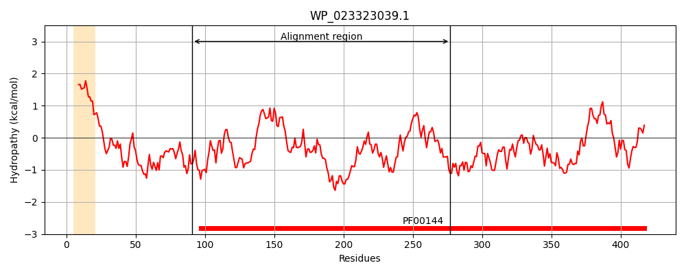
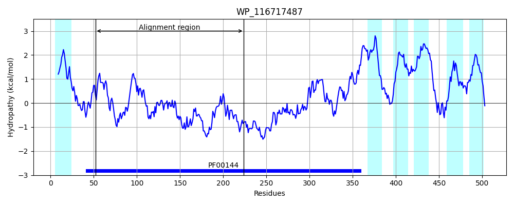
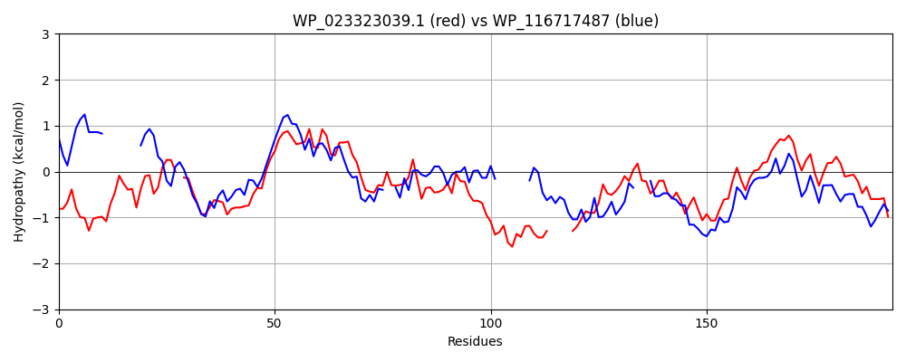

Hit Accession: WP_116717487
Hit TCID: 9.B.306.1.3
Hit Description: gnl|BL_ORD_ID|21793 gnl|TC-DB|WP_116717487|9.B.306.1.3 class A beta-lactamase-related serine hydrolase [Anaerolineales bacterium]
Mach Len: 193
e:0.000000
Query TMS Count : 1
Hit TMS Count: 6
TMS-Overlap Score: 0.000000
Predicted Substrates:None
BLAST Alignment:
Score: 154 , Bit scores: 63 bits, E-value: 5.1e-11, Alignment length: 193, Percentage identity: 27
Query: 91 TLNGHTWTLQDYLKRENVSGMLVLKDGK-VAWKYLGNGNTDTTLWTSRSVGKSVVSTLVGIAIQQGKIHSLDDLITVYEPELKGTAWDGVTLRQLIQHTSGVDWNEDYTNPQSH-----FARLTQCEAQPGAYDCVRKIVSALSRKHPAGEQWSYSSGGAWLLGDVLERATGMSLAAWLEQSLWQPAGMAHDG 277
T++G QD G++ L +G +A + G NT T + S+ KS + + I QG+++ D + AW G+T+ QL+ HTSG+ +P+ H AR + PG Y +I + + GEQ+ Y++ G LL ++E+A+G S A +L+++++ P M G
Sbjct: 52 TISGSVLIAQD--------GVVFLNEGYGLADRAQGIPNTPGTRFHLASLSKSFTAMAILILQSQGRLNVQDPICN--HMVRCSEAWQGITIHQLLTHTSGL-------SPRLHDIVSKAARKPEAPPDPGYYI---EIAGEVPLETRPGEQYDYNNFGYTLLAHIIEQASGQSYADFLDKNIFTPLNMRDSG 224 | Protein Hydropathy Plots: |
|---|
|  |  |
Pairwise Alignment-Hydropathy Plot:
|
|---|
|  |